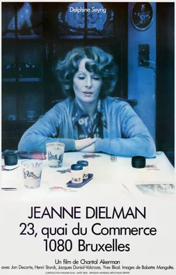

.jpg){kind=link}

Explore film ↗Jeanne Dielman, 23 quai du Commerce, 1080 Bruxelles
Chantal Akerman
DIRECTOR PROFILE
Chantal Anne Akerman (French: ; 6 June 1950 – 5 October 2015) was a Belgian filmmaker, artist, and film professor at the City College of New York (2011–2015).

LIFE & CAREER
Chantal Anne Akerman (French: ; 6 June 1950 – 5 October 2015) was a Belgian filmmaker, artist, and film professor at the City College of New York (2011–2015). Akerman is best known for her films Je Tu Il Elle (1974), Jeanne Dielman, 23 quai du Commerce, 1080 Bruxelles (1975), and News from Home (1976). The second of these was ranked the greatest film of all time in Sight & Sound magazine's 2022 "Greatest Films of All Time" critics poll, making her the first woman to top the poll.
Adapted excerpt from Wikipedia, CC BY-SA 4.0. Pronunciation notes omitted.
Read the full biographyImage: Mario De Munck. Source & rights: CC BY-SA 4.0 ↗.
Profile reference: Director background ↗
Open this director checklist ↗
A selection of this director’s films available in the archive.